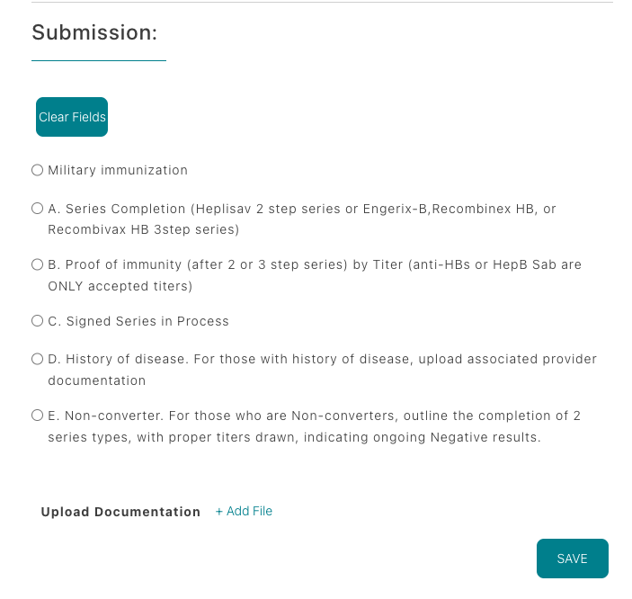
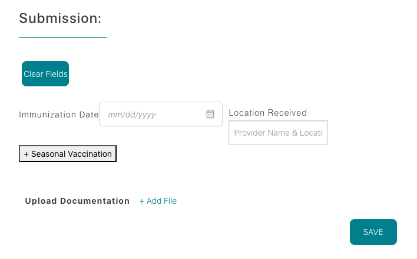
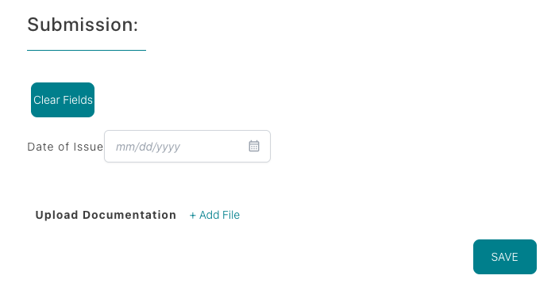
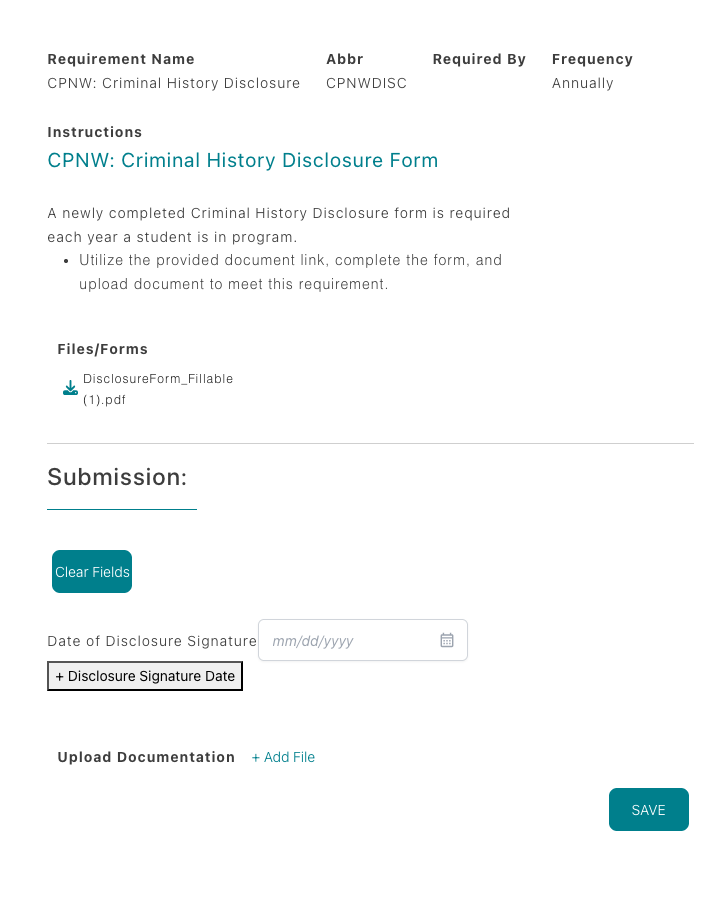

Beyond the 10 core eLearning modules, CPNW tracks 11 additional
requirements that verify your immunizations, screenings, and
clinical readiness. Review each item carefully and upload the
requested documentation.
Each card below summarizes one of the 11 requirements you will see
in the Requirements table. We will add screenshots for each item
soon, so consider this your quick-reference checklist for what
evidence to gather.
Independent WATCH
An annual Washington State Patrol (WATCH) background check is required. Your program has selected that
students obtain and upload the report themselves, and the $11 fee is paid directly to WSP.
The WATCH report you upload must include:
Rap sheet (proof the WATCH was run and is clear)
Current legal name plus previous names/aliases
Date of birth
International students, minors, or those without an SSN should confirm with their coordinator which WATCH
variant is required before ordering.
CPNW WATCH
If your program has CPNW conduct the WATCH, no action is required from you. CPNW runs the report and updates
this requirement automatically.
When the WATCH is complete, the status changes to complete and the report is available in your account. You do
not need to upload anything unless your coordinator specifically asks you to.
Independent Background Check
Your program requires you to obtain and upload a background check
report independently. Any cost is the responsibility of the
student.
The report must include:
Social Security trace
County felony/misdemeanor search for every county from the SS trace
Healthcare/OIG/GSA/national & international terrorist list checks (DHHS)
National sex offender search
National federal criminal search
International students, minors, or anyone without an SSN must
confirm the required background check type with their program
coordinator before ordering.
Checkr Background Check
Some programs process background checks via CPNW’s partnership
with Checkr. Your coordinator initiates the request and a
time-sensitive email is sent to the address listed in your CPNW
demographics.
The Checkr link expires 7 days after it is sent—start immediately.
If the email is missing, check junk/spam folders.
Once completed, you will receive a copy of the report. Uploading
it is optional unless instructed by your coordinator.
No further action is required after you follow the instructions in
the CPNW/Checkr email within the 7-day window.
Hepatitis B
CPNW requires evidence of Hepatitis B immunity via a positive
blood titer. Use the option that matches your situation:
Option A — Completed series + titer:
Heplisav-B (2-dose) or Engerix-B/Recombivax HB/Recombinex HB
(3-dose) and a positive Anti-HBs (Hep B Sab) titer.
Upload both the series dates and lab report.
Option B — Positive titer only: If you
previously finished the series, upload the lab report showing
Anti-HBs/Hep B Sab immunity.
Option C — Series in progress: Select
“Series In Process,” upload documentation for doses received
(2-dose = 1 month apart, 3-dose = over 6 months), and enter
dates/titer info in section A. Status becomes Conditionally
Approved; you’ll receive a reminder in 30 days to add remaining
data.
Option D — History of disease: Upload a
provider letter that confirms the Hep B diagnosis and history.
Option E — Non-converter: After two full
series without antibodies, submit the Hep B declination form
from your program plus lab proof of each series and titer
result.
Every submission must include titer details unless you are
in-process, have a documented history of disease, or are uploading
the non-converter/declination packet.

Tuberculin
Provide proof of TB screening results dated within one year of
your program start. Screening can be completed by a two-step skin
test or an Interferon Gamma Release Assay (IGRA) blood test to
verify you are free of active tuberculosis.
Choose the option that matches your screening:
Option A — Two-step TB skin test: Two
separate placements and reads, 1–3 weeks apart (four
office visits total). Upload documentation for both steps.
Option B — TB blood test (IGRA): Single
blood draw such as QuantiFERON or T-Spot. Upload the lab report
showing the negative result.
Option C — Positive history/new positive:
Complete a medical evaluation, upload provider notes, diagnostic
exams, chest X-rays, treatment records, and the Tuberculosis
Symptom Screening form (TBCheckForm24.pdf).
When uploading, ensure all applicable documentation is attached so
coordinators can verify your TB status.
MMR / MMRV
Provide documentation showing you are immune to Measles, Mumps, and Rubella (and Varicella if reporting MMRV).
Clinical participation requires proof of vaccination and/or positive titers.
Choose one of the following paths:
Option 1 — Vaccination: Upload records for two doses of MMR or MMRV.
Option 2 — Proof of immunity by titers: Submit lab reports showing positive results for
Measles (Rubeola), Mumps, and Rubella (plus Varicella if tested). Labs typically draw once and report three
separate values.
If any component is non-immune, document the booster for that component and upload the updated vaccination or
titer results so coordinators can verify immunity.
Varicella (Chickenpox)
Meet the Varicella requirement by submitting either two vaccination records or a positive immunity titer.
Verbal or written history of the disease does not count as proof.
Option 1 — Vaccination: Upload documentation for two doses of the Varicella vaccine.
Option 2 — Positive titer: Provide the lab result from a Varicella IgG blood draw
showing immunity.
If the titer result is negative or non-immune, record the booster dose before resubmitting your requirement.
Tetanus, Diphtheria & Pertussis (Tdap)
Provide proof of receiving the Tdap vaccine. A Td or Tdap booster
is required every 10 years after the initial dose to stay
compliant.
Document at least one Tdap dose (upload the immunization record).
If your initial Tdap was more than 10 years ago, include the
date of your most recent Td or Tdap booster.
Influenza
An annual flu vaccine is required each season (usually due by the
end of September) to remain compliant. Upload proof of the current
season’s dose—either injectable or nasal spray administered by a
healthcare professional. Self-administered sprays are not
accepted.
Documentation must include the
vaccination date and location.
Vaccines dated 8/1 or later expire on
10/1 of the following year; doses dated before
8/1 expire on 10/1 of the current year.
Each season, click the
+ Seasonal Vaccination button, enter the new
date and location, and then upload documentation. Upload alone
will not satisfy the requirement.

COVID-19
Upload your entire COVID-19 vaccination history. Some clinical
sites may require an annual booster, so keep your records current.
If you have no vaccination history, select the
NA checkbox to indicate you have not received
any doses.
Otherwise, upload documentation showing the manufacturer, series
dates, and booster administration dates.
BLS Provider Course
Maintain an active AHA BLS credential (in-person
Provider Course, HeartCode + skills check, or RQI). Training must
cover adult/child/infant CPR, AED, choking response, and
single/multi-rescuer scenarios.
Upload the full PDF/eCard showing issue date, next RQI date, and
2-year expiration, and enter the exact
Date of Issue into the field before saving.
Only AHA programs listed above are accepted.

Criminal History Disclosure
Complete the CPNW Criminal History Disclosure form every year you
are in your program. Use the document link provided in the
requirement, fill it out, sign, and upload the updated PDF to stay
compliant.
A newly completed form is required annually.
Ensure all questions are answered before uploading.

Pro Tip: Upload clear, legible documentation and
double-check expiration dates before saving. Most delays happen when
forms are incomplete or unreadable.